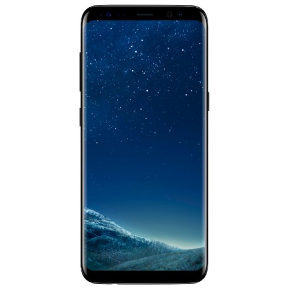

Смартфон Samsung Galaxy S8 64Gb Черный бриллиант

Описание товара
Новый Samsung Galaxy меняет представление о смартфоне. Безграничный изогнутый с двух сторон экран обеспечивает эффект полного погружения и подчёркивает гармонию стиля и инноваций. Сканер радужной оболочки глаза позволяет надёжно защитить личные данные и с лёгкостью разблокировать смартфон. Камера 12 Мп c технологией Dual Pixel и диафрагмой F1.7 помогает делать потрясающие снимки при любых условиях освещённости.
Характеристики
Ключевые преимущества
| Обратите внимание |
Безрамочный дизайн |
| Удачное решение |
Сканер радужки глаза |
| Важная особенность |
Поддержка Samsung Pay |
| Пользователи оценят |
Интеллектуальный помощник Bixby |
| Хорошо придумано |
Наушники-вкладыши фирмы AKG |
Серия модели
Операционная система
| Операционная система |
Android 7.0 |
Дисплей
| Диагональ/разрешение |
5.8"/2960x1440 пикс |
| Диагональ экрана |
5.8"(14.5 см)/td>
|
| Технология дисплея |
Super AMOLED |
| Количество цветов дисплея |
16.7 млн. |
| Сенсорный дисплей |
Да |
| Always On Display |
Да |
| Тип стекла |
3D |
Процессор
| Производитель процессора |
Samsung |
| Тип процессора |
Exynos 8895 |
| Частота процессора |
4 x 2.35ГГц + 4 x 1.9ГГц |
| Количество ядер |
8 |
Фотокамера
| Разрешение фотокамеры |
12 МПикс |
| Стабилизатор изображения |
оптический |
| Автофокус |
Да |
| Встроенная вспышка |
Да |
| Качество видеосъемки |
3840x2160 Пикс (Ultra HD 4K) |
| Разрешение фронтальной камеры |
8 Мпикс |
Встроенная память
| Оперативная память (RAM) |
4 ГБ |
| Встроенная память (ROM) |
64 ГБ |
Карта памяти
| Тип карты памяти |
microSD, microSDHC, microSDXC |
| Макс. емкость карты памяти |
256 ГБ |
Стандарты связи
| Поддержка 4G LTE |
Да |
| Поддержка стандартов |
2G/3G/4G(LTE) |
Передача данных
| Передача данных |
GPRS/EDGE/HSDPA/HSUPA/HSPA+ |
SIM карта
| Количество SIM карт |
2 |
| Тип SIM карты |
nano-SIM |
Функции
| Встроенный барометр |
Да |
| Поддержка USB Host (OTG) |
Да |
| Поддержка GPS |
Да |
| Цифровой компас |
Да |
| Датчик ориентации экрана |
Да |
| Датчик ускорения (G-sensor) |
Да |
| Датчик отпечатков пальцев |
Да |
| Технология NFC |
Да |
| Монитор сердечного ритма |
Да |
| Сканер радужной оболочки глаза |
Да |
Электропитание
| Время в режиме ожидания |
до 145 часов |
| Время в режиме разговора |
до 24 часов |
| Емкость аккумулятора |
3000 мАч |
| Тип аккумулятора |
несъёмный |
| Беспроводная зарядка |
Да |
| Быстрая зарядка |
Да |
Поддержка Wi-Fi
| Поддержка Wi-Fi |
IEEE 802.11 a/b/g/n/ac |
| Wi-Fi точка доступа |
Да |
| Технология Wi-Fi Direct |
Да |
Bluetooth
| Встроенный модуль Bluetooth |
5.0 |
| Поддержка технологии aptX |
Да |
Интерфейсы
| Type-C USB 3.0 |
5.0 |
| Разъем 3.5 мм для подкл. гарнитуры |
1 |
Корпус
| Материал корпуса |
стекло |
| Пылевлагозащитный корпус |
Да |
Комплектация
| Проводная гарнитура |
в комплекте |
| Кабель для связи с ПК |
в комплекте |
| USB Host (OTG) кабель |
в комплекте |
| Зарядное устройство в комплекте |
Да |
Цвет, размеры и вес
| Цвет |
черный |
| Габаритные размеры (В*Ш*Г) |
149*68*8 мм |
| Вес |
155 г |
Основные характеристики
| Гарантия |
1 год |
| Страна |
Вьетнам |
| Высота |
49 мм |
| Ширина |
68 мм |
| Глубина |
8 мм |
Подробное описание
Новый Samsung Galaxy меняет представление о смартфоне. Безграничный изогнутый с двух сторон экран обеспечивает эффект полного погружения и подчёркивает гармонию стиля и инноваций. Сканер радужной оболочки глаза позволяет надёжно защитить личные данные и с лёгкостью разблокировать смартфон. Камера 12 Мп c технологией Dual Pixel и диафрагмой F1.7 помогает делать потрясающие снимки при любых условиях освещённости.
БЕЗГРАНИЧНЫЙ ЭКРАН
Безрамочный изогнутый с двух сторон экран Samsung Galaxy S8 может воспроизводить широкоформатные видео с эффектом полного погружения в происходящее, а технология Super AMOLED передаст живые и насыщенные цвета. Увеличенный экран Samsung Galaxy S8 идеально подходит для нескольких дел сразу - можно переписываться с друзьями, не отрываясь от просмотра любимого фильма. Всё, что нужно, - просто открыть чат в режиме многозадачности.
СКАНЕР РАДУЖНОЙ ОБОЛОЧКИ ГЛАЗА
Сканер радужной оболочки глаза в Samsung Galaxy S8 является одной из самых безопасных систем биометрической идентификации среди доступных на смартфонах. В отличие от отпечатка пальца радужную оболочку нельзя дублировать, поскольку она имеет уникальный рисунок - личная информация будет надёжно защищена. Технологию удобно использовать для разблокировки, а также быстрых и безопасных покупок с помощью платёжного сервиса Samsung Pay.
ТЕХНОЛОГИЯ ПРОФЕССИОНАЛЬНЫХ ЗЕРКАЛЬНЫХ КАМЕР Dual Pixel
Samsung Galaxy S8 обладает основной камерой 12 Мп c технологией Dual Pixel и диафрагмой F1.7, что позволяет делать потрясающие снимки при любом свете. Неважно, что снимать: ночное небо или вечеринку с друзьями - фотографии всегда будут чёткими и яркими. Сделать идеальные селфи можно с помощью обновлённой фронтальной камеры 8 Мп с функцией распознавания лиц и интеллектуальным автофокусом.
НЕВЕРОЯТНО МОЩНЫЙ ПРОЦЕССОР
Samsung Galaxy S8 оснащён новейшим 10-нм процессором, обеспечивающим гладкую работу смартфона с наименьшим энергопотреблением, - идеально для игр! Смартфон имеет стандарт защиты IP68, поэтому его можно использовать под дождём или взять с собой в бассейн.
Отзывы
Плюсы
Экран,экран,экран,память 64 гб. камера
Минусы
наверно ПО,наверно батарея
Отзыв
Эксперт месяца.Решил сделать предзаказ этой модели,до этого был iphone 6s.Айфон конечно хорош,но скучен..Самсунг шагнули пока что вперед,с таким экраном!плюс многие "фишки"которые у apple отсутствуют. Память 64 гб на всех моделях тоже очень хороший бонус.Плюс считаю камера будет снимать очень качественные кадры.Опасения опять же вызывает батарея,но вроде с первых тестов 1-2 дня она держит,что уже хорошо хотя и ..В подарок будет камера 360,тоже очень приятный бонус.